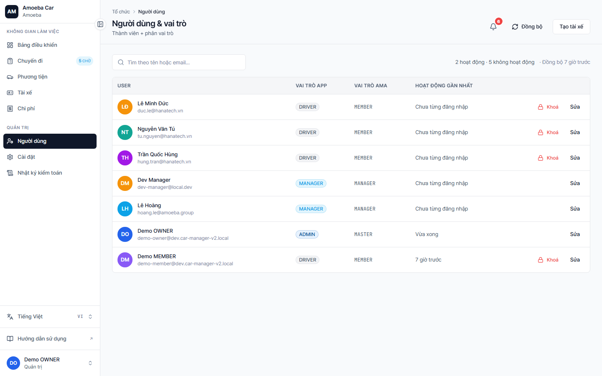
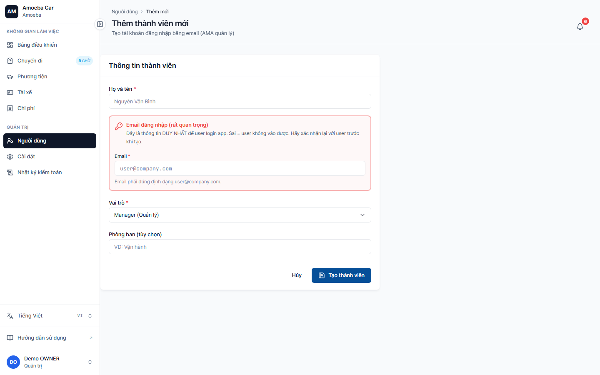

Quản lý người dùng
- URL
/users·/users/new(mời) ·/users/[id]/edit- Quan trọng
- Tài khoản user thuộc về AMA (ama.amoeba.site) — bạn chỉ "mời" và "cấp quyền dùng app", không tạo tài khoản từ đầu
Danh sách người dùng

Mỗi dòng user hiển thị:
- Avatar + Tên + nhãn trạng thái (nếu Inactive/Suspended)
- Số điện thoại (bấm gọi)
- Vai trò trong app: ADMIN / MANAGER / DRIVER (hoặc "—" nếu chưa từng login)
- Vai trò AMA: OWNER / MASTER / MANAGER / MEMBER / VIEWER (monospace)
- Lần hoạt động cuối
Onboarding thành viên mới (gửi thông tin qua tin nhắn)
Cập nhật quy trình (25-05-2026): nút "+ Mời thành viên"
trên trang /users đã được gỡ bỏ. Thay vào đó, Admin gửi
trực tiếp thông tin doanh nghiệp cho thành viên qua kênh liên lạc cá nhân
(SMS / Zalo / Telegram / email), sau đó thành viên tự đăng nhập ở
/login với số điện thoại của mình.
Quy trình đơn giản hơn vì không cần thao tác trên hệ thống — chỉ cần gửi đúng Mã doanh nghiệp (ent_code) là thành viên tự đăng nhập được.
Bước 1 — Lấy mã doanh nghiệp của bạn
Mã doanh nghiệp hiển thị ở trang Cấu hình hệ thống
— mục "Tổ chức". Mã có dạng VN01, AMOEBA-VN…
(chữ in hoa, không khoảng trắng). Đây là mã được Amoeba cấp khi đăng ký doanh nghiệp.
Bước 2 — Gửi tin nhắn cho thành viên
Dùng mẫu tin nhắn dưới đây (sao chép + sửa tên cho phù hợp):
Chào [Tên],
Bạn đã được thêm vào hệ thống Amoeba Car Manager của công ty.
Cách đăng nhập:
1. Mở: https://apps.amoeba.site/app-car-manager-v2/login
2. Mã doanh nghiệp: VN01 ← thay bằng mã của bạn
3. Số điện thoại: số điện thoại của bạn (đã đăng ký với Amoeba)
4. Bấm "Đăng nhập"
Sau khi vào hệ thống, bạn sẽ được tự động cấp quyền theo vai trò.
Cần hỗ trợ liên hệ: [Admin tên / số điện thoại]Bước 3 — Thành viên tự đăng nhập
Khi thành viên truy cập /login với mã doanh nghiệp + SĐT của họ, hệ thống tự động:
- Tạo bản ghi user trong
car_users(nếu chưa có) - Map vai trò AMA → vai trò app theo bảng dưới
- Chuyển hướng tới trang chủ phù hợp với vai trò
Yêu cầu bắt buộc: số điện thoại thành viên phải đã được Amoeba đăng ký trước với vai trò trong tổ chức của bạn. Nếu chưa, hãy liên hệ quản trị AMA hoặc bộ phận nhân sự để bổ sung vào hệ thống Amoeba trước khi gửi thông tin đăng nhập.
Bước 4 — Bổ sung hồ sơ tài xế (nếu là tài xế)
Sau khi tài xế đăng nhập lần đầu (user tự xuất hiện trong /users),
Admin vào /drivers/new để tạo hồ sơ tài xế
(bằng lái, hạng, hạn) và liên kết với user vừa đăng nhập.

/users/new — vẫn truy cập được qua URL trực tiếp nếu cần (legacy), nhưng nút quick-access đã được gỡ bỏ theo quy trình mới.Mapping vai trò AMA → vai trò app
| AMA role | App role | Ghi chú |
|---|---|---|
| OWNER, MASTER | ADMIN | Toàn quyền hệ thống |
| MANAGER | MANAGER | Đặt xe + xem báo cáo riêng |
| MEMBER, VIEWER | DRIVER | Tự động — nếu user là tài xế, bạn cần thêm hồ sơ ở /drivers/new |
Đổi vai trò app
Vào /users/[id]/edit → đổi Vai trò app. Lưu ý: AMA role là nguồn cuối — đồng bộ lại mỗi lần user login.
Đổi vai trò được audit log — sẽ thấy entry ROLE_CHANGE với người thay đổi + thời điểm. Cẩn thận khi nâng/hạ quyền.